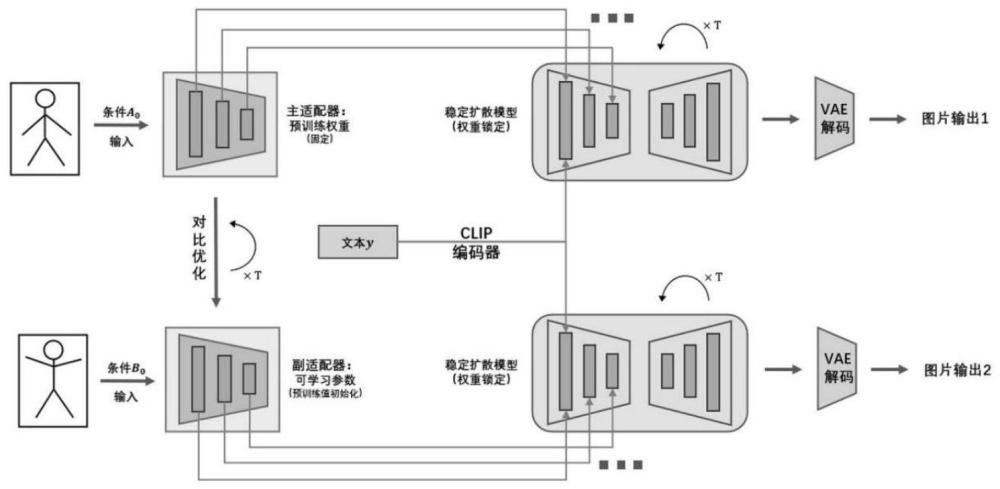

Publications

Patent
Ding Chen,
Keyi Wang
, Zhou Yu, Jun Yu
A Human Posture Scene Restoration Method Based on the Adaptive Network Enhanced Diffusion Model.(一種基於適配網絡增强擴散模型的人體姿態場景恢復方法)
CN202311293866.1[P]. 2024.01.12